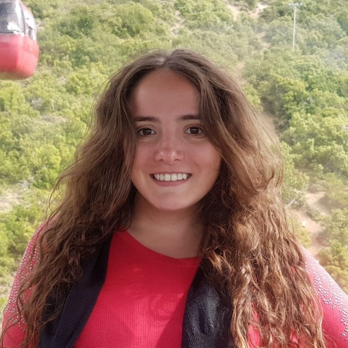

CV MARIA EMILIA SCATOLON
Descripción personal:
Mi nombre es María Emilia Scatolon. Tengo 28 años. Vivo en Mendoza, Argentina.
Educación:
Soy Desarrolladora Java Fullstack. Estoy en tercer año de la carrera de Bioingeniería
Experiencia laboral:
Fui docente reemplazante de Inglés en una escuela primaria durante un año.
Skills:
- Responsable
- Organizada
- Habilidades blandas
Foto:

Hobbies:
Hacer ejercicio, ver series y pasar tiempo con mi familia y amigos
Sobre esta carrera:
Quiero estudiar esta carrera porque busco crecer, tanto en el plano profesional como personal